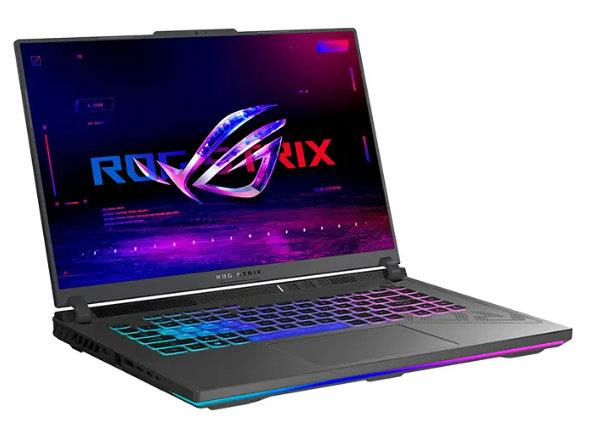
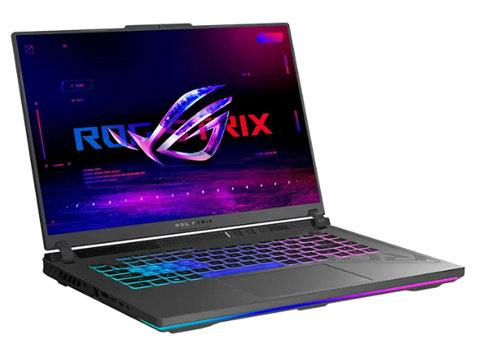
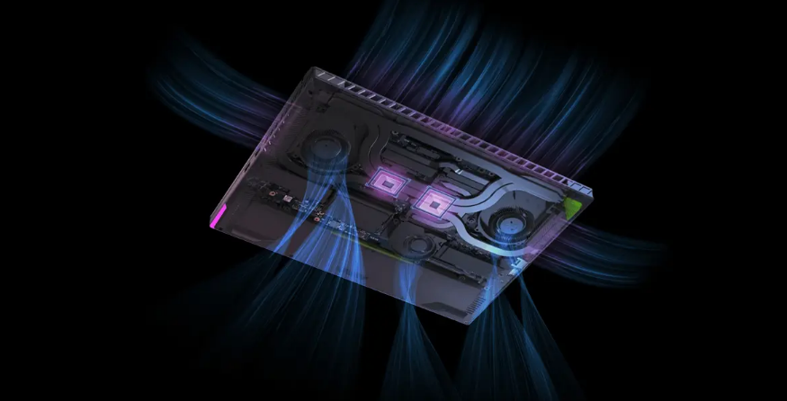

خانه
💻 لپ تاپ 16 اینچی ایسوس ROG Strix G16 GL664JI i7 13650HX 16GB 1TB SSD RTX 4070
 

پردازنده: intel Core i7 13650HX
ظرفیت حافظه رم: 16 گیگابایت DDR5
ظرفیت حافظه داخلی: 1 ترابایت SSD
حافظه پردازنده گرافیکی: 8 گیگابایت
پردازنده گرافیکی: NVIDIA GeForce RTX 4070
اندازه صفحه نمایش: 16 اینچ
دقت صفحه نمایش: WUXGA
وزن: 2.5 کیلوگرم
باتری: ظرفیت 90 وات ساعت
لپ تاپ ایسوس ROG Strix G16 GL664JI از سری محبوب لپ تاپ راگ برای گیمرهای حرفهای که به دنبال نهایت قدرت و عملکرد هستند، طراحی شده است. این لپ تاپ گیمینگ ایسوس با بهرهمندی از جدیدترین پردازنده و کارت گرافیک، هر بازی را با بالاترین تنظیمات گرافیکی و نرخ فریم خارقالعاده اجرا میکند.
لپ تاپ گیمینگ راگ ROG Strix G16 GL664JI با بهرهمندی از پردازنده نسل سیزدهم Intel Core i7-13650HX، حدود 50 درصد قدرتمندتر از نسل قبلی خود عمل میکند.
کارت گرافیک NVIDIA GeForce RTX 4070، گرافیکی 2 برابر روانتر و شفافتر را به شما ارائه میدهد. صفحه نمایش 16 اینچی با نرخ تازهسازی 165 هرتز، تصویری بدون تاری و تاخیر را به نمایش میگذارد.
عملکرد سختافزاری لپ تاپ گیمینگ راگ GL664JI
قلب تپنده این لپ تاپ راگ، پردازنده نسل سیزدهم Intel Core i7-13650HX است که با قدرت فراتر از تصور، اجرای روان هر بازی را برای شما تضمین میکند.
این پردازنده قدرتمند با 14 هسته و 20 رشته، به شما اطمینان میدهد که میتوانید هر بازی را با بالاترین تنظیمات گرافیکی و بدون کوچکترین لگ یا افت فریم اجرا کنید. چه عاشق بازی باشید و چه به دنبال انجام کارهای سنگین و محاسباتی پیچیده، این پردازنده خارقالعاده، نیازهای شما را به طور کامل برآورده میکند.

فرکانس هسته تا 2.6 گیگاهرتز:
با این سرعت باورنکردنی، هیچ چالشی نمیتواند سد راه شما در دنیای بازیها باشد.
24 مگابایت حافظه کش:
این حافظه بزرگ، به پردازنده کمک میکند تا به سرعت به اطلاعات مورد نیاز خود دسترسی پیدا کند و عملکردی روان و بیوقفه را ارائه دهد.
پشتیبانی از فناوری Intel Turbo Boost Max Technology 3.0:
این فناوری به طور هوشمندانه، فرکانس هستهها را در صورت نیاز افزایش میدهد تا به شما در دستیابی به بالاترین سطح عملکرد کمک کند.
با لپ تاپ گیمینگ ایسوس مدل ROG Strix G16 GL664JI و پردازنده نسل سیزدهم Intel Core i7-13650HX، هیچ محدودیتی برای قدرت و عملکرد شما وجود نخواهد داشت.
عملکرد باتری و شارژدهی لپ تاپ گیمینگ ایسوس ROG Strix G16 GL664JI
لپ تاپ ROG Strix G16 GL664JI با باتری لیتیوم-یون 90 واتی 4S1P خود، خیال همه را راحت کرده است. دیگر نگران تمام شدن شارژ باتری خود نباشید! این باتری خارقالعاده با ظرفیت 90 واتساعت، مخزنی از انرژی بیانتهاست که شما را در طول ساعتها بازی و انجام کارهای سنگین یاری میکند.
چه غرق در دنیای بازیهای مورد علاقه خود شوید و چه به انجام پروژههای گرافیکی حجیم بپردازید، G16 GL664JI بدون ذرهای کمبود شارژ، در کنار شما خواهد بود.
لپ تاپ ایسوس راگ ROG Strix G16 GL664JI از باتری 90Wh بهره میبرد، اما عمر واقعی آن به نحوه استفاده شما بستگی دارد. لپ تاپهای گیمینگ اولویت را به عملکرد میدهند، بنابراین عمر باتری نقطه قوت آنها نیست، اما در اینجا تفکیکی برای سناریوهای مختلف کاربری ارائه میشود: در زیر بارهای سنگین مانند بازی، انتظار حدود 4 ساعت با یک بار شارژ را داشته باشید.
این به دلیل این است که اجزای قدرتمند مانند CPU و GPU باتری را به سرعت خالی میکنند. برای وبگردی، برنامههای گرافیکی و کارهای سبک، ممکن است حدود 5 ساعت دوام بیاورید. بهینهسازی تنظیمات برای عمر باتری میتواند در اینجا کمک کند.
استریم فیلم یا برنامههای تلویزیونی میتواند باتری را با سرعت متوسط تخلیه کند. 3 تا 4 ساعت محدوده واقعی است. در حالی که باتری ROG Strix G16 GL664JI برای طول عمر در رقابت برنده نخواهد شد، برای یک لپ تاپ گیمینگ مناسب است. با تنظیمات و مدیریت حجم کاری خود، میتوانید چند ساعت از آن به صورت بدون برق استفاده کنید. با این حال، برای استفاده طولانی مدت دور از پریز برق، احتمالا باید شارژر را در دسترس داشته باشید.
بررسی ابعاد و وزن لپ تاپ گیمینگ راگ ایسوس GL664JI
با وزن 2.50 کیلوگرم (5.51 پوند)، ROG Strix G16 GL664JI در میان لپ تاپهای گیمینگ 16 اینچی، جزو سبکوزنها محسوب میشود. این وزن به لطف استفاده از بدنهای باریک و شاسی آلومینیومی به دست آمده تا تجربهی مطلوبی را رقم بزند.
در مقایسه با لپ تاپهای گیمینگ 17 اینچی که معمولاً وزنی بیش از 3 کیلوگرم دارند، Strix G16 حملونقل بسیار راحتتری داشته و برای جابجایی در بین خانه، محل کار یا دانشگاه ایدهآل خواهد بود. وزن ROG Strix G16 GL664JI را میتوان برای یک لپ تاپ گیمینگ 16 اینچی قدرتمند، کاملاً مناسب دانست.
اولین چیزی که در مورد لپ تاپ گیمینگ ROG Strix G16 GL664JI نظر شما را به خود جلب میکند، طراحی ظریف و مدرن آن است. این لپ تاپ با ضخامت تنها 2.26 تا 3.04 سانتیمتر، یکی از باریکترین لپ تاپهای گیمینگ موجود در بازار است. وزن 2.1 کیلوگرمی آن نیز حمل و نقل این لپ تاپ را بسیار آسان میکند.
|
مشخصات فیزیکی
|
پردازنده مرکزی
|
حافظه RAM
|
حافظه داخلی
|
صفحه نمایش
|
باتری
|
|
ابعاد
|
سازنده پردازنده
|
سری پردازنده
|
مدل پردازنده
|
فرکانس پردازنده
|
ظرفیت حافظه رم
|
نوع حافظه رم
|
ظرفیت حافظه داخلی
|
نوع حافظه داخلی
|
اندازه صفحه نمایش
|
نوع صفحه نمایش
|
دقت صفحه نمایش
|
صفحه نمایش مات
|
صفحه نمایش لمسی
|
توضیحات باتری
|
|
35.4×26.4×2.26 سانتی متر |
intel
|
Core i7
|
13650HX
|
تا 2.6 گیگاهرتز
|
16 گیگابایت
|
DDR5
|
1 ترابایت
|
SSD
|
16 اینچ
|
IPS
|
WUXGA 1920×1200
|
بله
|
خیر
|
90Wh
|